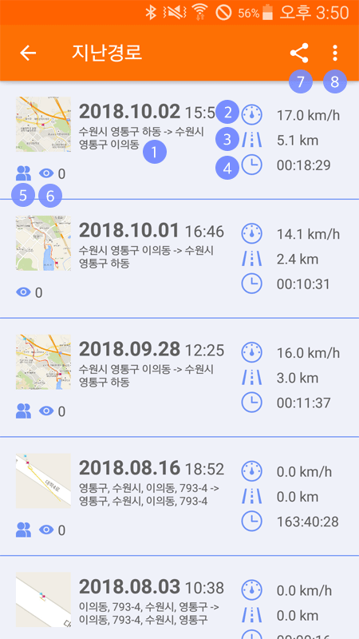
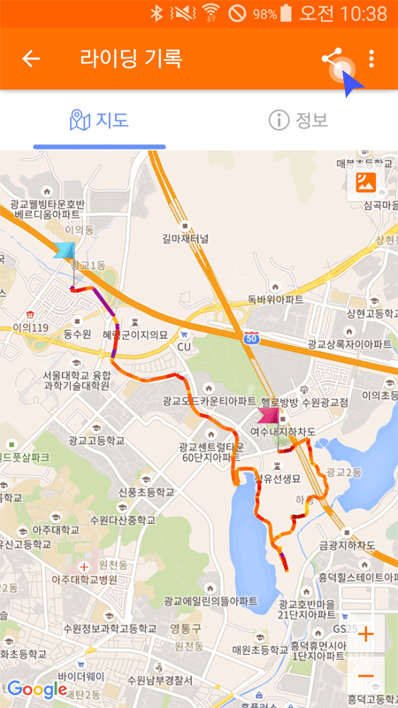
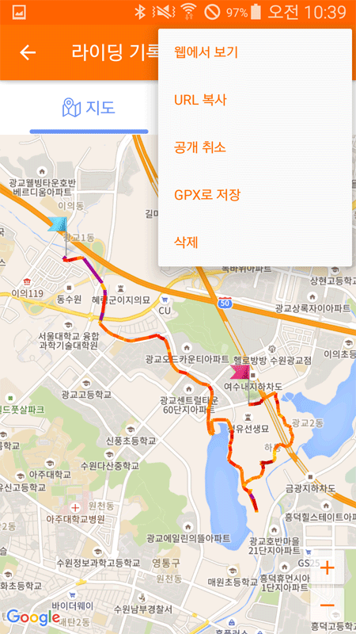

메인 메뉴의 ‘지난 경로'를 통해 기기 목록 화면으로 이동합니다.
화면에 저장된 트래킹 목록이 표시되며, 클릭하면 지난 경로를 볼 수 있습니다.
① 주소 : 트래킹이 시작된 주소
② 속도 : 평균속도
③ 거리 : 라이딩 한 거리
④ 시간 : 라이딩 전체 시간
⑤ 공개상태 : 현재 라이딩 정보의 공개 또는 비공개 상태
⑥ 조회수 : 공유한 내 라이딩 정보 조회 수
⑦ 공유하기 : 현재 라이딩 정보 공유하기
⑧ 더보기 : 웹으로 보기, url복사 등 추가 기능
① 파란색 깃발: 출발지점
② 빨간색 깃발: 종료지점
③ 트래킹 경로: 트래킹 한 경로
속도에 따른 색상: 노란색 » 빨간색 » 보라색 (5km 마다)
우측의 정보탭에서 라이딩 기록을 상세하게 볼수 있습니다.
라이딩 기록 화면에서 ‘공유' 버튼을 클릭하면 SNS나 메세지 등으로 해당라이딩 기록을 친구와 공유할 수 있습니다.
라이딩 기록화면에서 '더보기' 버튼을 클릭하여 추가기능을 실행할 수 있습니다.
- 웹에서 보기 : 기록화면을 웹에서 상세하게 봅니다.
- URL 복사 : 해당 기록의 URL을 복사합니다.
- 공개 취소 : 현재 라이딩 기록을 비공개로 전환합니다.
- GPX로 저장 : 해당라이딩 코스를 GPX 파일로 휴대폰에 저장합니다.
- 삭제 : 현재 라이딩 기록을 삭제합니다.